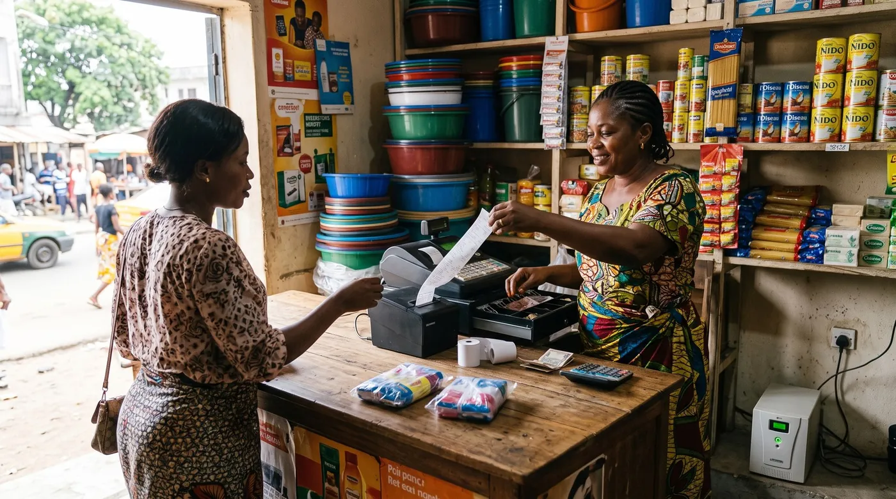

Facture normalisée et coupure de réseau : que faire quand la connexion tombe
C'est la première question que se pose un boutiquier à qui l'on impose la facture électronique, et c'est celle à laquelle personne ne répond. Ni les foires aux questions officielles, ni les fédérations professionnelles, ni les blogs de logiciels ne disent ce qu'il faut faire quand la connexion tombe au moment précis où il faudrait émettre. Le client est là, la marchandise est sur le comptoir, et l'écran tourne dans le vide. Pendant ce temps, les coupures d'électricité, elles, sont bien réelles : en Côte d'Ivoire, les commerçants dénoncent des dégâts sur leurs congélateurs, climatiseurs et balances électroniques, endommagés par des retours brusques de courant. Ce guide traite de ce trou : comment continuer à vendre sans se mettre en faute.

Le trou : la question que personne ne traite
Nous avons cherché la réponse là où elle devrait être : documentation officielle, communications des fédérations, presse économique régionale. Le constat est net et il vaut d'être dit franchement : la question de la coupure réseau pendant l'émission d'une facture normalisée n'est traitée nulle part publiquement, ni côté administration, ni côté organisations professionnelles. Les contenus disponibles portent tous sur l'obligation elle-même, ses seuils et ses échéances — jamais sur ce que fait le commerçant le mardi à 15 h quand le réseau est tombé.
À lire dans la foulée : la facture normalisée en Afrique de l'Ouest, une caisse qui fonctionne hors ligne, et le logiciel de caisse en Côte d'Ivoire.
Cela ne veut pas dire qu'aucune règle n'existe. Cela veut dire qu'elle n'est pas accessible au commerçant qui la cherche, ce qui revient au même dans la pratique. Et cela impose une conclusion simple : tant que vous n'avez pas de réponse écrite de votre administration, organisez-vous pour que la coupure ne détruise aucune information. C'est la seule position défendable dans tous les cas de figure.
Trois pannes différentes, trois réponses différentes
On dit « ça a coupé » pour trois situations qui n'ont ni les mêmes causes ni les mêmes solutions. Savoir laquelle vous frappe évite une demi-journée perdue.
1. Le courant. Le délestage arrête tout, y compris la box, le routeur et l'imprimante. En Côte d'Ivoire, les commerçants demandent formellement des indemnisations et un calendrier de délestage prévisible, en pointant les équipements grillés par les retours de courant. Réponse : une batterie ou un onduleur sur le seul poste de caisse, et une tablette qui tient sur sa propre charge. Ce n'est pas le groupe électrogène de toute la boutique qu'il faut, c'est trois heures d'autonomie sur un seul appareil.
2. Le réseau de données. L'électricité est là, la connexion non : antenne saturée, forfait épuisé, panne opérateur. Réponse : une seconde carte SIM d'un autre opérateur, gardée dans la caisse, et un partage de connexion depuis un téléphone comme secours.
3. La plateforme fiscale elle-même. Votre connexion fonctionne, le service distant ne répond pas. C'est le cas le plus délicat, parce que la panne n'est pas de votre fait et que vous ne pouvez rien y changer. Réponse : la preuve. Captures d'écran horodatées du message d'erreur, heure de début, heure de reprise. Nous y revenons plus bas, c'est le point le plus important de cet article.
Ce qu'il faut faire pendant la coupure
L'objectif n'est pas de contourner l'obligation, il est de ne perdre aucune information et de pouvoir tout prouver ensuite.
- Continuez à enregistrer la vente localement. Une caisse qui fonctionne hors ligne enregistre le détail, l'heure et le mode de paiement, et transmet plus tard. Une vente non enregistrée, elle, est perdue pour tout le monde, y compris pour vous.
- Remettez un justificatif au client, quel qu'il soit. Ticket de caisse hors ligne, ou à défaut un reçu manuscrit numéroté avec la date, l'heure, le détail et votre cachet. Expliquez au client, en une phrase, que la facture définitive suivra. Peu de gens en font une histoire ; l'absence totale de papier, si.
- Notez l'heure exacte du début et de la fin de la panne, sur un cahier réservé à ça. Une ligne par incident : date, heure de début, heure de fin, nature (courant, réseau, plateforme), nombre de ventes concernées.
- Photographiez l'écran d'erreur. Une capture horodatée du message vaut infiniment mieux qu'un souvenir un mois plus tard. Si c'est la plateforme qui est en panne, c'est votre seule preuve que la faute n'était pas de votre côté.
- Régularisez dès le retour du réseau, le jour même. Pas le lendemain. Chaque jour d'écart rend la régularisation plus lourde et plus discutable.
- Conservez le lien entre le reçu provisoire et la facture définitive. Notez le numéro du reçu manuscrit sur la facture émise après coup, et inversement. C'est ce chaînage qui rend l'ensemble vérifiable.
Obtenir une réponse écrite de l'administration, et pourquoi c'est décisif
C'est le conseil le plus utile de cet article, et le moins souvent donné : écrivez à votre centre des impôts pour demander la procédure applicable en cas d'indisponibilité technique, et gardez la réponse.
Trois raisons de le faire même si vous pensez connaître la règle. D'abord, une pratique tolérée localement n'a aucune valeur le jour d'un contrôle mené par quelqu'un d'autre. Ensuite, une réponse écrite vous dit précisément quel délai de régularisation vous avez, ce qui change toute votre organisation. Enfin, une demande écrite laisse une trace qui montre votre bonne foi, ce qui pèse dans une discussion sur une pénalité.
Et si l'administration ne répond pas — cela arrive, la FENACCI en Côte d'Ivoire indique avoir déposé deux demandes d'audience auprès du Premier ministre, le 23 janvier et le 19 février 2026, restées sans réponse — alors votre demande sans réponse devient elle-même une pièce du dossier. Envoyez-la de façon traçable, et classez l'accusé de réception avec vos justificatifs.
Le modèle de demande à envoyer
Court, précis, une seule question par paragraphe. À adapter au nom exact de votre administration et de votre régime.
Objet : demande de précision — procédure en cas d'indisponibilité technique pour l'émission de la facture normalisée
Madame, Monsieur,
Exploitant [nature du commerce] à [ville], immatriculé sous le numéro [identifiant], je suis assujetti à l'obligation d'émission de la facture normalisée électronique.
Mon établissement subit régulièrement des interruptions de courant et de connexion. Je souhaite connaître la procédure officielle à suivre lorsque l'émission est techniquement impossible au moment de la vente, et en particulier : 1) puis-je remettre au client un justificatif provisoire, et sous quelle forme ; 2) de quel délai je dispose pour régulariser après le rétablissement ; 3) quels éléments de preuve de l'indisponibilité sont attendus ; 4) la procédure diffère-t-elle selon que la panne provient de mon établissement ou de la plateforme.
Je vous remercie de bien vouloir me confirmer ces points par écrit, afin que mon organisation soit conforme.
Le vrai sujet de fond : on numérise plus vite qu'on ne forme
Derrière la question technique s'en cache une autre, plus large, et il serait malhonnête de l'éviter. Le président de l'Union des commerçants de Côte d'Ivoire l'a posée publiquement dans des termes qu'aucune brochure ne reprend : « dans un secteur où 90 % de ceux qui y exercent sont illettrés, il est demandé aux commerçants de renseigner des données sur un site Internet. Comment est-ce que nos mamans qui vendent dans le marché peuvent-elles y arriver ? »
La FENACCI fait le même constat en termes plus institutionnels : une part importante des acteurs évolue encore dans l'informel, et une campagne nationale de sensibilisation et de formation apparaît indispensable. Ce n'est pas un argument contre la facture normalisée, qui a sa logique. C'est un rappel que l'outil doit être utilisable par la personne réelle qui tient la boutique, pas par l'utilisateur imaginaire d'une notice.
Concrètement, pour vous, cela veut dire deux choses. Un logiciel qui demande de comprendre un formulaire fiscal à chaque vente ne sera pas utilisé : il faut que la caisse produise la donnée toute seule. Et si quelqu'un de votre entourage lit et écrit mieux que vous, faites-en la personne qui vérifie la régularisation une fois par semaine — pas celle qui tape chaque vente.
Ce qu'une caisse doit savoir faire ici
digabloPos
Sur la partie que le logiciel peut réellement tenir, digabloPos fonctionne en mode hors ligne avec synchronisation automatique : la vente est enregistrée avec son détail, son heure et son mode de paiement même sans connexion, et remonte dès que le réseau revient. C'est exactement ce qu'il faut ici, parce que le risque n'est pas d'émettre en retard, c'est de ne rien avoir enregistré du tout. Il est prêt pour la facturation électronique, et il ne prélève aucune commission imposée sur vos encaissements, ce qui compte quand le mobile money et les espèces cohabitent au comptoir.
Soyons clairs sur les limites, ce point est important. digabloPos n'est pas homologué par la DGI ivoirienne, la DGID sénégalaise ni aucune administration fiscale d'Afrique de l'Ouest, et nous n'affirmons rien de tel. La seule certification que nous puissions revendiquer est la NF525 en France. « Prêt pour » ne veut pas dire « homologué » : avant de vous en servir pour vos obligations locales, vérifiez le statut d'homologation auprès de votre administration et auprès de l'éditeur. Aucun logiciel ne vous met non plus à l'abri d'une pénalité si la plateforme officielle est en panne : seule votre preuve horodatée le fera. Le plan de base est gratuit à vie pour 2 employés avec 30 jours d'historique ; le troisième employé et l'historique illimité sont des modules payants.
👍 Points forts
- Mode hors ligne réel avec synchronisation : rien n'est perdu pendant la coupure
- Chaque vente horodatée, avec son mode de paiement et l'employé
- Aucune commission imposée, espèces et mobile money traités pareil
- Gratuit à vie sur le plan de base, sans engagement
👎 À savoir
- Non homologué en Afrique de l'Ouest : à vérifier auprès de votre administration
- Ne protège pas d'une pénalité si la plateforme fiscale est en panne
- Historique limité à 30 jours sur le plan gratuit
Testez une coupure avant qu'elle arrive
Ouvrez une caisse gratuite, coupez le wifi en pleine vente et regardez ce qui se passe. Dix minutes vous en apprendront plus que n'importe quelle fiche produit.
Créer ma caisse gratuiteUne préparation qui prend une heure
Une fois, un matin calme, et vous êtes couvert pour l'année.
- Écrivez à votre centre des impôts avec le modèle ci-dessus, et classez la réponse dans le même dossier que vos justificatifs.
- Achetez un carnet à souches numéroté et rangez-le dans le tiroir de la caisse. Il ne servira que dix fois par an et ces dix fois compteront.
- Mettez une deuxième carte SIM d'un autre opérateur dans la caisse, chargée.
- Branchez le poste de caisse sur un onduleur ou une batterie, lui seul, pas toute la boutique.
- Faites l'essai en conditions réelles : coupez le réseau pendant une vente et vérifiez que la caisse enregistre quand même, puis rétablissez et vérifiez que tout est bien remonté.
- Écrivez la marche à suivre sur une feuille collée près de la caisse, en cinq lignes, pour que la personne qui tient la boutique sans vous sache quoi faire.
Questions fréquentes
Que faire si le réseau coupe au moment d'émettre une facture normalisée ?
Continuez d'enregistrer la vente localement sur une caisse qui fonctionne hors ligne, remettez au client un justificatif provisoire — ticket hors ligne ou reçu manuscrit numéroté avec date, heure, détail et cachet —, notez l'heure de début et de fin de la panne, photographiez l'écran d'erreur, puis régularisez dès le retour du réseau, le jour même, en conservant le lien entre le reçu provisoire et la facture définitive.
Existe-t-il une procédure officielle en cas de panne ?
Elle n'est pas publiée de façon accessible. Nous avons cherché du côté des administrations fiscales, des fédérations professionnelles et de la presse économique régionale : la question de la coupure réseau pendant l'émission n'est traitée nulle part publiquement. Cela ne signifie pas qu'aucune règle n'existe, mais qu'elle n'est pas à la portée du commerçant qui la cherche. D'où l'importance de la demander par écrit à votre centre des impôts et de conserver la réponse.
Un reçu manuscrit est-il valable en attendant ?
Cela dépend de votre pays et de votre régime, et c'est précisément l'un des points à faire confirmer par écrit. Ce qui est sûr, c'est qu'un reçu manuscrit numéroté, daté, détaillé et cacheté vaut infiniment mieux que rien : il documente la vente, rassure le client, et sert de pièce de rattachement quand vous émettez la facture définitive. Notez son numéro sur la facture régularisée et inversement.
Et si c'est la plateforme fiscale elle-même qui est en panne ?
C'est le cas le plus délicat, parce que la défaillance n'est pas de votre fait. La seule chose qui vous protège est la preuve : captures d'écran horodatées du message d'erreur, heure de début et de fin, nombre de ventes concernées, consignées dans un cahier d'incidents. Sans preuve datée, une panne de plateforme et un retard de votre part se ressemblent beaucoup dans un dossier.
Comment se préparer aux coupures d'électricité ?
Ne cherchez pas à alimenter toute la boutique. Mettez le seul poste de caisse sur un onduleur ou une batterie avec quelques heures d'autonomie, et travaillez sur un appareil qui tient sur sa propre charge. Les commerçants ivoiriens signalent que les retours brusques de courant abîment congélateurs, climatiseurs et balances électroniques : protéger l'appareil compte autant que garder l'alimentation.
digabloPos est-il homologué pour la facture normalisée en Afrique de l'Ouest ?
Non, et nous ne l'affirmons pas. digabloPos est certifié NF525 en France uniquement ; il est prêt pour la facturation électronique, ce qui n'est pas la même chose qu'une homologation locale. Avant de vous en servir pour vos obligations en Côte d'Ivoire, au Sénégal ou ailleurs, vérifiez le statut d'homologation auprès de votre administration et de l'éditeur. Ce qu'il apporte ici est ailleurs : un mode hors ligne réel, qui garantit qu'aucune vente n'est perdue pendant la panne.
Sources
Les propos cités sont publics et datés. Consultez-les directement, et vérifiez toujours l'état du droit auprès de votre administration.
- Press Ivoire : entretien avec le président de l'Union des commerçants de Côte d'Ivoire sur le délestage et sur la saisie de données en ligne imposée à des commerçants qui ne lisent pas.
- Koaci : la FENACCI demande la suspension des contrôles et rappelle ses deux demandes d'audience restées sans réponse.
- L'Informateur : les commerçants réclament des indemnisations et un calendrier de délestage prévisible, en pointant les équipements endommagés.
- Direction générale des impôts, Côte d'Ivoire et Direction générale des impôts et des domaines, Sénégal : les sources à interroger pour votre situation précise.